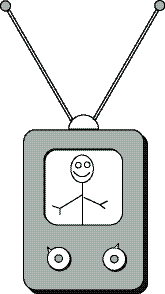

Antwort:
Nicht allzu schwer.
Gerade eine Methode muss geändert werden — die Zugriffsmethode,
die diese Regel implementiert.
Wenn die Variablen nicht als private gekennzeichnet wären und
keine Zugriffsmethode verwendet werden würde,
würde diese kleine Änderung dazu führen, jede Zeile des gesamten Programms nach Stellen durchzusehen, an denen auf diese Variablen zugegriffen wird.
Kapselung (Verbergen von Daten)

Die Programmiertechnik, über die wir gerade gesprochen haben,
heißt Kapselung.
Kapselung bedeutet das Verbergen von Details eines Objekts vor
anderen Teilen des Programms.
Das Objekt kann nur über seine Zugriffsmethoden verwendet werden,
die sorgfältig geschrieben wurden, um das
Objekt konsistent und geschützt zu halten.
Kapselung lässt ein Objekt wie eine Blackbox aussehen:
Das Innere einer Box ist vor Blicken geschützt.
Von außen gibt es einige Steuerelemente, die für den Anwender die einzige Möglichkeit darstellen die Box zu verwenden.
Das übliche Beispiel dafür ist ein Fernsehgerät,
bei dem dem Benutzer der Zugang zu den meisten inneren Abläufen
versperrt bleibt.
Der Benutzer kommuniziert mit dem Gerät über
wohl definierte Steuerelemente.
Die Steuerelemente werden manchmal als Interface bezeichnet.
In der objektorientierten Programmierung sollte der Programmierer
versuchen, das Interface eines Objekts einfach und zweckmäßig zu gestalten.
Die inneren Abläufe des Objekts sollten private sein.